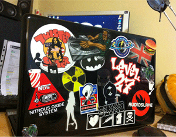

There used to be a humble blog here; what feels like a life time ago now.
Unfortunately, most of it was old and out dated; technology moves at a relentless pace, right? This was once an active archive of, normally small, web development code snippets providing solutions. It was a collection crafted during my early software developer days, where I had to learn fast and hard to survive! It was more of a personal scratchpad, than anything else. Some articles became quite popular in its hayday, and others barely received enough views to count on my fingers. The articles were filled with JavaScript, PHP, CSS and loads of other web related stuff. Anything I basically stumbled into during my early days of learning, which I thought would be useful for others, or something I'd almost certainly forget about in the future; acting as a kind of self reference.
Looking back, it was a thrilling era, and one that'll be missed.
In an attempt to hold onto my nostalgia of this time, I migrated some of the guides to https://guides.codechewing.com; these guides were either good enough as is, or needed only a little TLC to be acceptable for readers. Sadly, this ended up receiving no attention either, and I've decided to take it down. Blogs cost a tremendous amount of energy and time. It's hard to justify when bills have to get paid and family has to be fed.
As a tribute, the original Code Chewing logo is at the top of this page :'(
And a reminder of my first 'dev' laptop is below:

Farewell, Pete x